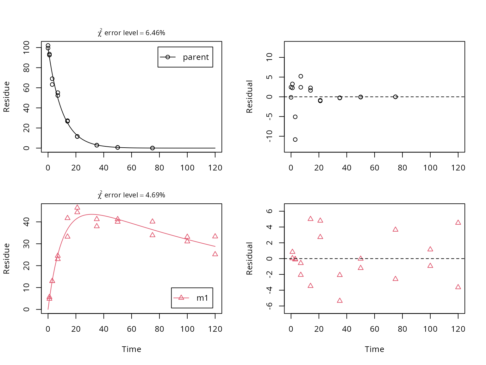

FOCUS_D.RmdThis is just a very simple vignette showing how to fit a degradation model for a parent compound with one transformation product using mkin. After loading the library we look at the data. We have observed concentrations in the column named value at the times specified in column time for the two observed variables named parent and m1.
## name time value
## 1 parent 0 99.46
## 2 parent 0 102.04
## 3 parent 1 93.50
## 4 parent 1 92.50
## 5 parent 3 63.23
## 6 parent 3 68.99
## 7 parent 7 52.32
## 8 parent 7 55.13
## 9 parent 14 27.27
## 10 parent 14 26.64
## 11 parent 21 11.50
## 12 parent 21 11.64
## 13 parent 35 2.85
## 14 parent 35 2.91
## 15 parent 50 0.69
## 16 parent 50 0.63
## 17 parent 75 0.05
## 18 parent 75 0.06
## 19 parent 100 NA
## 20 parent 100 NA
## 21 parent 120 NA
## 22 parent 120 NA
## 23 m1 0 0.00
## 24 m1 0 0.00
## 25 m1 1 4.84
## 26 m1 1 5.64
## 27 m1 3 12.91
## 28 m1 3 12.96
## 29 m1 7 22.97
## 30 m1 7 24.47
## 31 m1 14 41.69
## 32 m1 14 33.21
## 33 m1 21 44.37
## 34 m1 21 46.44
## 35 m1 35 41.22
## 36 m1 35 37.95
## 37 m1 50 41.19
## 38 m1 50 40.01
## 39 m1 75 40.09
## 40 m1 75 33.85
## 41 m1 100 31.04
## 42 m1 100 33.13
## 43 m1 120 25.15
## 44 m1 120 33.31Next we specify the degradation model: The parent compound degrades with simple first-order kinetics (SFO) to one metabolite named m1, which also degrades with SFO kinetics.
The call to mkinmod returns a degradation model. The differential equations represented in R code can be found in the character vector $diffs of the mkinmod object. If a C compiler (gcc) is installed and functional, the differential equation model will be compiled from auto-generated C code.
## Successfully compiled differential equation model from auto-generated C code.## parent
## "d_parent = - k_parent_sink * parent - k_parent_m1 * parent"
## m1
## "d_m1 = + k_parent_m1 * parent - k_m1_sink * m1"We do the fitting without progress report (quiet = TRUE).
## Warning in mkinfit(SFO_SFO, FOCUS_2006_D, quiet = TRUE): Observations with
## value of zero were removed from the dataA plot of the fit including a residual plot for both observed variables is obtained using the plot_sep method for mkinfit objects, which shows separate graphs for all compounds and their residuals.

Confidence intervals for the parameter estimates are obtained using the mkinparplot function.
A comprehensive report of the results is obtained using the summary method for mkinfit objects.
## mkin version used for fitting: 0.9.49.6
## R version used for fitting: 3.6.1
## Date of fit: Fri Nov 1 10:10:44 2019
## Date of summary: Fri Nov 1 10:10:44 2019
##
## Equations:
## d_parent/dt = - k_parent_sink * parent - k_parent_m1 * parent
## d_m1/dt = + k_parent_m1 * parent - k_m1_sink * m1
##
## Model predictions using solution type deSolve
##
## Fitted using 389 model solutions performed in 1.015 s
##
## Error model: Constant variance
##
## Error model algorithm: OLS
##
## Starting values for parameters to be optimised:
## value type
## parent_0 100.7500 state
## k_parent_sink 0.1000 deparm
## k_parent_m1 0.1001 deparm
## k_m1_sink 0.1002 deparm
##
## Starting values for the transformed parameters actually optimised:
## value lower upper
## parent_0 100.750000 -Inf Inf
## log_k_parent_sink -2.302585 -Inf Inf
## log_k_parent_m1 -2.301586 -Inf Inf
## log_k_m1_sink -2.300587 -Inf Inf
##
## Fixed parameter values:
## value type
## m1_0 0 state
##
## Optimised, transformed parameters with symmetric confidence intervals:
## Estimate Std. Error Lower Upper
## parent_0 99.600 1.57000 96.400 102.800
## log_k_parent_sink -3.038 0.07626 -3.193 -2.883
## log_k_parent_m1 -2.980 0.04033 -3.062 -2.898
## log_k_m1_sink -5.248 0.13320 -5.518 -4.977
## sigma 3.126 0.35850 2.396 3.855
##
## Parameter correlation:
## parent_0 log_k_parent_sink log_k_parent_m1
## parent_0 1.000e+00 6.067e-01 -6.372e-02
## log_k_parent_sink 6.067e-01 1.000e+00 -8.550e-02
## log_k_parent_m1 -6.372e-02 -8.550e-02 1.000e+00
## log_k_m1_sink -1.688e-01 -6.252e-01 4.731e-01
## sigma 1.164e-09 -8.908e-10 1.652e-08
## log_k_m1_sink sigma
## parent_0 -1.688e-01 1.164e-09
## log_k_parent_sink -6.252e-01 -8.908e-10
## log_k_parent_m1 4.731e-01 1.652e-08
## log_k_m1_sink 1.000e+00 -1.340e-10
## sigma -1.340e-10 1.000e+00
##
## Backtransformed parameters:
## Confidence intervals for internally transformed parameters are asymmetric.
## t-test (unrealistically) based on the assumption of normal distribution
## for estimators of untransformed parameters.
## Estimate t value Pr(>t) Lower Upper
## parent_0 99.600000 63.430 2.298e-36 96.400000 1.028e+02
## k_parent_sink 0.047920 13.110 6.126e-15 0.041030 5.596e-02
## k_parent_m1 0.050780 24.800 3.269e-23 0.046780 5.512e-02
## k_m1_sink 0.005261 7.510 6.165e-09 0.004012 6.898e-03
## sigma 3.126000 8.718 2.235e-10 2.396000 3.855e+00
##
## FOCUS Chi2 error levels in percent:
## err.min n.optim df
## All data 6.398 4 15
## parent 6.827 3 6
## m1 4.490 1 9
##
## Resulting formation fractions:
## ff
## parent_sink 0.4855
## parent_m1 0.5145
## m1_sink 1.0000
##
## Estimated disappearance times:
## DT50 DT90
## parent 7.023 23.33
## m1 131.761 437.70
##
## Data:
## time variable observed predicted residual
## 0 parent 99.46 99.59848 -1.385e-01
## 0 parent 102.04 99.59848 2.442e+00
## 1 parent 93.50 90.23787 3.262e+00
## 1 parent 92.50 90.23787 2.262e+00
## 3 parent 63.23 74.07320 -1.084e+01
## 3 parent 68.99 74.07320 -5.083e+00
## 7 parent 52.32 49.91207 2.408e+00
## 7 parent 55.13 49.91207 5.218e+00
## 14 parent 27.27 25.01257 2.257e+00
## 14 parent 26.64 25.01257 1.627e+00
## 21 parent 11.50 12.53462 -1.035e+00
## 21 parent 11.64 12.53462 -8.946e-01
## 35 parent 2.85 3.14787 -2.979e-01
## 35 parent 2.91 3.14787 -2.379e-01
## 50 parent 0.69 0.71624 -2.624e-02
## 50 parent 0.63 0.71624 -8.624e-02
## 75 parent 0.05 0.06074 -1.074e-02
## 75 parent 0.06 0.06074 -7.382e-04
## 1 m1 4.84 4.80296 3.704e-02
## 1 m1 5.64 4.80296 8.370e-01
## 3 m1 12.91 13.02400 -1.140e-01
## 3 m1 12.96 13.02400 -6.400e-02
## 7 m1 22.97 25.04476 -2.075e+00
## 7 m1 24.47 25.04476 -5.748e-01
## 14 m1 41.69 36.69002 5.000e+00
## 14 m1 33.21 36.69002 -3.480e+00
## 21 m1 44.37 41.65310 2.717e+00
## 21 m1 46.44 41.65310 4.787e+00
## 35 m1 41.22 43.31312 -2.093e+00
## 35 m1 37.95 43.31312 -5.363e+00
## 50 m1 41.19 41.21831 -2.831e-02
## 50 m1 40.01 41.21831 -1.208e+00
## 75 m1 40.09 36.44703 3.643e+00
## 75 m1 33.85 36.44703 -2.597e+00
## 100 m1 31.04 31.98163 -9.416e-01
## 100 m1 33.13 31.98163 1.148e+00
## 120 m1 25.15 28.78984 -3.640e+00
## 120 m1 33.31 28.78984 4.520e+00